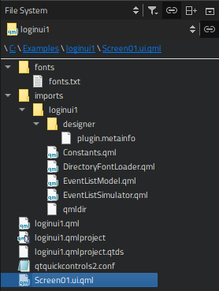

File System
If you cannot see a file in the Projects view, switch to the File System view, which shows all the files in the file system.

To move to the root directory of the file system, select Computer in the menu (1). Select Home to move to the user's home directory. Further, you can select a project to move to an open project or Projects to move to the directory specified in the Projects directory field in Tools > Options > Build & Run > General.
The file that is currently active in the editor determines which folder is displayed in the File System view:
- Projects if the file is located in a subdirectory of the Projects directory
- Home if the file is located in the user's home directory
- Computer in all other cases
To stop the synchronization between the editor and the File System view, delesect the  (Synchronize Root Directory with Editor) button.
(Synchronize Root Directory with Editor) button.
The path to the active file is displayed as bread crumbs. You can move to any directory along the path by clicking it.
File System Context Menu
Use the context menu functions to:
- Open files with the default editor or some other editor.
- Open a project located in the selected directory.
- Show the file or directory in the file explorer.
- Open a terminal window in the selected directory or in the directory that contains the file. To specify the terminal to use on Linux and macOS, select Tools > Options > Environment > System.
- Search from the selected directory.
- View file properties, such as name, path, MIME type, default editor, line endings, indentation, owner, size, last read and modified dates, and permissions.
- Create new files. For more information, see Adding Files to Projects.
- Rename or remove existing files.
- Create new folders.
- Compare the selected file with the currently open file in the diff editor. For more information, see Comparing Files.
- Display the contents of a particular directory in the view.
- Collapse all open folders.
File System View Toolbar
The toolbar in the File System view contains additional options.
To manage view contents, select  (Options):
(Options):
- To hide the bread crumbs, deselect the Show Bread Crumbs check box.
- By default, folders are separated from files and listed first in the view. To list all items in alphabetic order, deselect the Show Folders on Top check box.
- To also show hidden files, select Show Hidden Files.
To stop the synchronization with the file currently opened in the editor, deselect (Synchronize with Editor).